People
Our team works with national and international researchers and industry partners.
Team leader
Dr Zia Javanbakht
Senior Lecturer (Assistant Professor)
Dr Zia Javanbakht is a chartered engineer (in three fields of civil, structural, and mechanical engineering) and an early-career academic in the field of computational mechanics and material modelling. He has extensive knowledge in finite element analysis (ABAQUS and MSC MARC), programming (FORTRAN, Python, and MATLAB), and material modelling of composites and auxetics. He is an expert in developing customised programming code to solve unconventional engineering problems. He has published several peer-reviewed journal articles, authored books, edited books, and conference papers in collaboration with researchers from around the world.
He has more than a decade of industry experience in structural modelling/design and project management. He provides consultancy services for national and international companies, particularly in solid mechanics and simulation. He has been able to secure more than $3M funding from external and university grant applications. He holds the Fellow status of the Higher Education Academy (FHEA).
Researchers
-
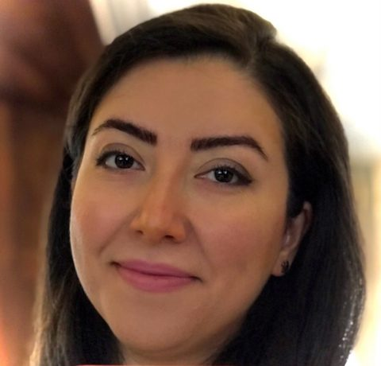
Dr Faranak Amani
PhD candidate (Dentistry)
Collaborators
-
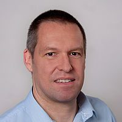
Prof Andreas Öchsner
Esslingen University
-
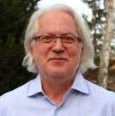
Prof Holm Altenbach
University of Magdeburg
-
Prof Stefanie Feih
Griffith University
-
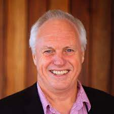
Prof David Lloyd
Griffith University
-
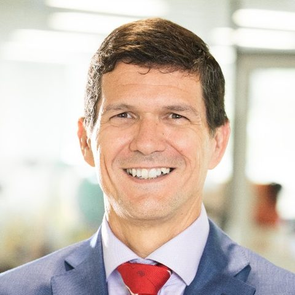
Prof Paulo de Souza
Edith Cowan University
-
Prof John Summerscales
University of Plymouth
-
A/Prof Wayne Hall
Griffith University
-
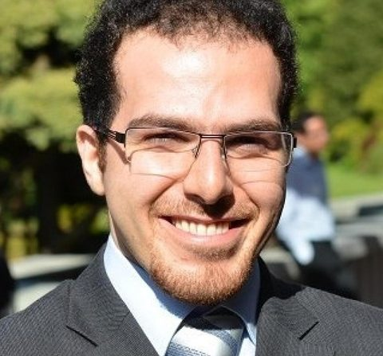
A/Prof Sardar Malek
University of Victoria
-
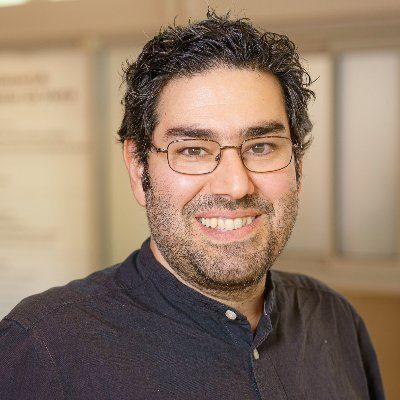
A/Prof Mohammad J. Mirzaali
TU Delft
-
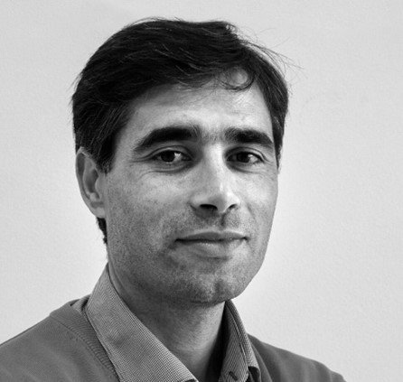
A/Prof António Manuel Ramos
University of Aveiro
-
Dr-Ing Marcus Aßmus
University of Magdeburg
-
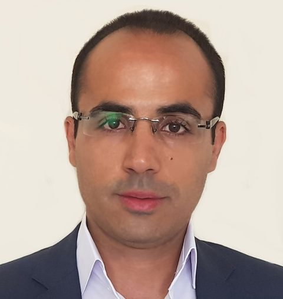
Dr Hamid Ahmadi
University of Tasmania
-
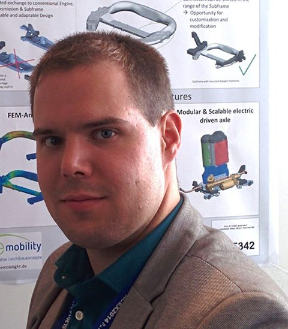
Dr Leonhard Hitzler
Technical University of Munich
-
Dr Dane Miller
Bond University
-
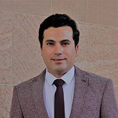
Dr Nima Talebian
Bond University
-
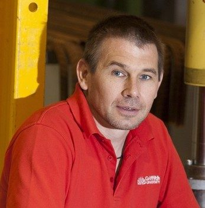
Dr Ian Underhill
Griffith University
-
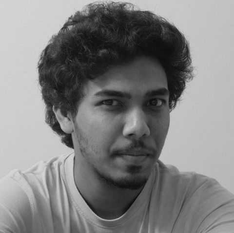
Mr Gaurav Singh
Mathscapes Research
Alumni
-
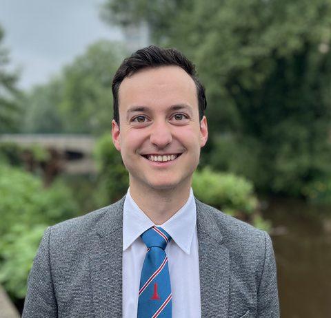
Mr Justus Pranger
Research Intern (TU/e)
-
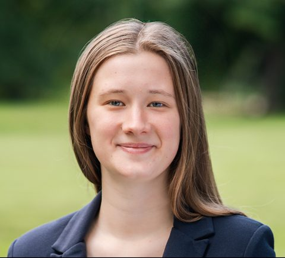
Ms Theresa Maria Lehmhaus
Research Intern (Leibniz Uni Hanover)
-
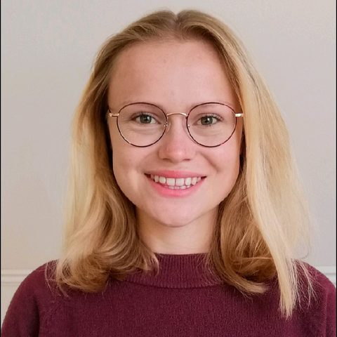
Ms Marie-Theres Liebers
Research Intern
-
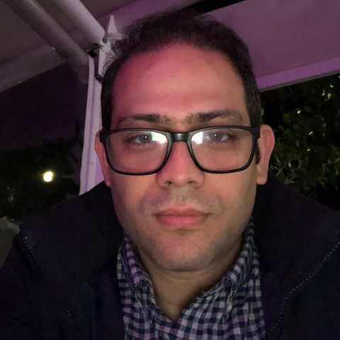
Dr Mahyar Masaeli
PhD Student
-
Ms Simone Heilgeist
MSc Student
-
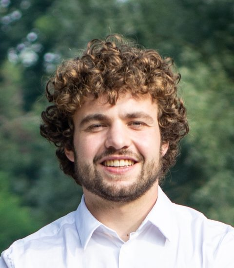
Mr Jip Rijksen
Research Intern
-
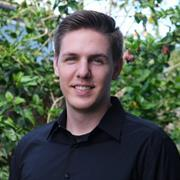
Dr Andreas Kromik
Post-doc
-
Dr Rahul Singh Dhari
PhD Student
-
Mr Brenton Miller
BSc Student
-
Mr Ali Ebrahimzadeh Dehghani
PhD Student
-
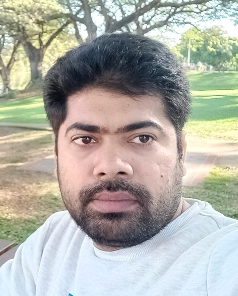
Mr Mobin Mobin Majeed
Visiting PhD Student
-
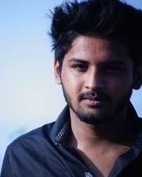
Mr Akshay Asthana
MPhil Student